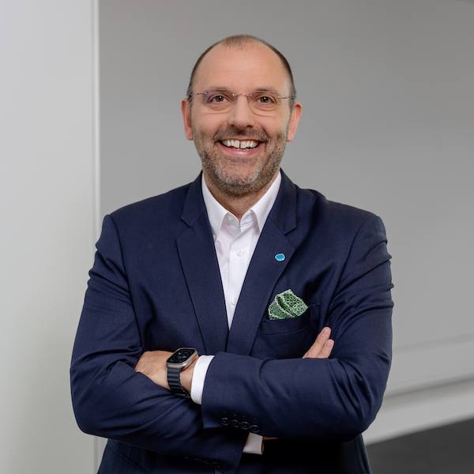

VP Technology & Innovation, Capgemini Engineering
Managing Director, Microsys Technologies
Peter Fintl
International technology executive with leadership experience across engineering, mobility, semiconductors, AI, and industrial transformation.
Peter Fintl combines deep technology expertise with measurable business impact. His leadership experience spans Europe, China, and North America, with a focus on how software, semiconductors, AI, and industrial transformation reshape markets and competitiveness. He is regularly featured in leading media and speaks at major industry forums.

Why this matters
International leadership
Experience across Europe, China, and North America in growth, transformation, and cross-border business leadership.
Sector depth
Strong track record across mobility, semiconductors, embedded systems, AI, and industrial technology.
Public credibility
Regular media commentary, visible thought leadership, and speaking roles at major industry forums.
Business impact
Known for connecting engineering depth with growth, innovation monetization, and strategic transformation.
Selected media & commentary
Deutsche Welle
Outlook for the German automotive industry
Interview and expert commentary on the outlook for the German automotive industry and the strategic implications of market change.
Read more →Automobilwoche
Megawatt charging and its implications for the EV market
Perspective on what megawatt charging could mean for user experience, competitiveness, and the next stage of electric mobility.
Neue Zürcher Zeitung
DeepSeek, open source, and the future of AI
Assessment of open-source AI approaches, market dynamics, and what differentiates new entrants in the AI landscape.
Frankfurter Allgemeine Zeitung
CES trends and the role of AI in industry
Commentary on key CES themes, including AI and the broader implications for industrial and automotive technology.
Süddeutsche Zeitung
Robotics and industrial transformation
Discussion of robotics, AI, and what embodied intelligence may change in industrial environments.
Handelsblatt
Semiconductors, ecosystems, and industrial strategy
Perspective on semiconductor ecosystems, resilience, and the implications for Europe's strategic positioning.
Video highlights
Selected articles & publications
Harnessing Generative AI for Automotive Excellence
Exploration of how generative AI can create value across automotive engineering and development.
Securing the Future: Post-Quantum Cryptography in the Automotive Industry
Perspective on the importance of quantum-safe cybersecurity for future automotive systems.
Automotive Know-How For New Industries: Too Good To Be True?
Reflections on transferring automotive engineering capability into adjacent industries.
What Drives the SDV? A View on Semiconductors for the Automotive Industry
Analysis of why semiconductor strategy is becoming central to software-defined mobility.
AI in Engineering
A practical view on what AI changes in engineering processes, productivity, and industrial competitiveness.
How Taiwan semiconductors are key for global high-tech
Perspective on Taiwan's role in the global semiconductor landscape and broader industrial implications.
Selected speaking engagements
2025
CES
Speaker / Executive representative
AI, semiconductors, and mobility technology trends
Las Vegas
2025
IAA Mobility
Speaker
Software-driven mobility and ecosystem transformation
Munich
2025
Semicon Europa
Speaker / Panelist
Semiconductor strategy and industry transformation
Munich
2026
Embedded World
Speaker / Industry representative
Embedded AI, edge systems, and robotics
Nuremberg
2025
Hannover Messe
Speaker / Interview guest
Robotics, AI, and industrial innovation
Hannover
2025
China Car Symposium
Moderator / Fireside Chat
Engineering acceleration and collaboration
China
LinkedIn Posts
Selected posts and insights from Peter Fintl's LinkedIn activity.
Latest Coverage
Executive profile
Peter Fintl is an international technology executive with leadership experience across engineering, mobility, semiconductors, AI, and industrial transformation. He serves as Vice President Technology & Innovation at Capgemini Engineering and as Managing Director of Microsys Technologies. His work spans Europe, China, and North America, with a focus on how emerging technologies reshape markets, value chains, and competitiveness. He is known for combining technical depth with business impact, and for helping organizations navigate transformation in complex industrial environments.
- VP Technology & Innovation, Capgemini Engineering
- Managing Director, Microsys Technologies
Connect
For executive exchange, media commentary, keynote speaking, or selected advisory discussions: